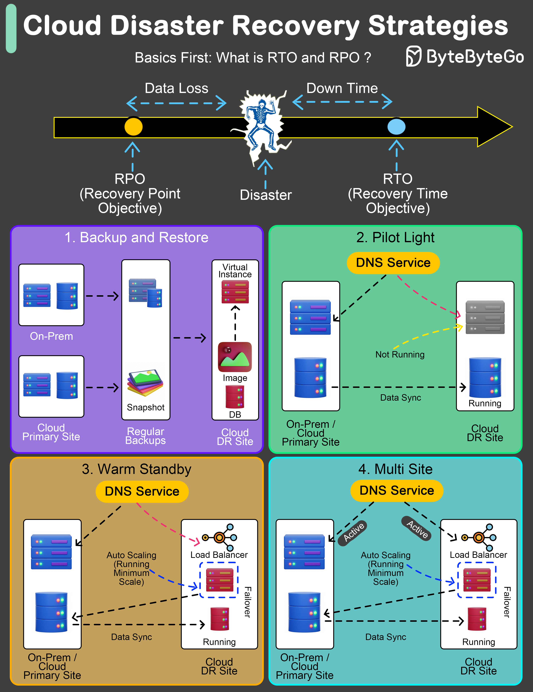

An effective Disaster Recovery (DR) plan is not just a precaution; it’s a necessity.
The key to any robust DR strategy lies in understanding and setting two pivotal benchmarks: Recovery Time Objective (RTO) and Recovery Point Objective (RPO).
Recovery Time Objective (RTO) refers to the maximum acceptable length of time that your application or network can be offline after a disaster.
Recovery Point Objective (RPO), on the other hand, indicates the maximum acceptable amount of data loss measured in time.
Let’s explore four widely adopted DR strategies:
This method involves regular backups of data and systems to facilitate post-disaster recovery.
Maintains crucial components in a ready-to-activate mode, enabling rapid scaling in response to a disaster.
Establishes a semi-active environment with current data to reduce recovery time.
Ensures a fully operational, duplicate environment that runs parallel to the primary system.